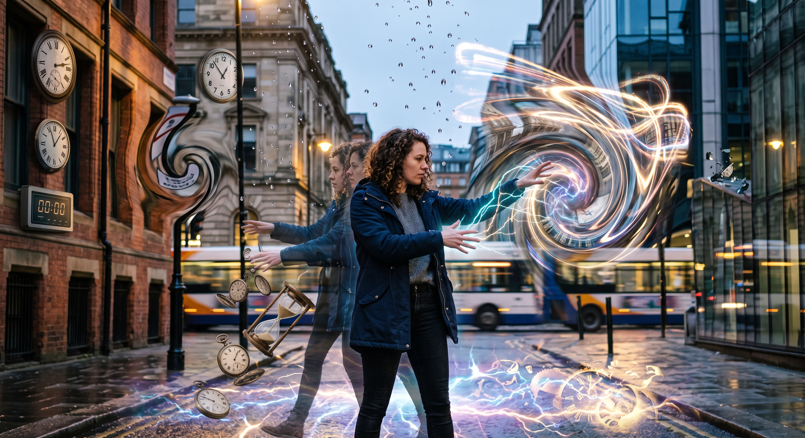
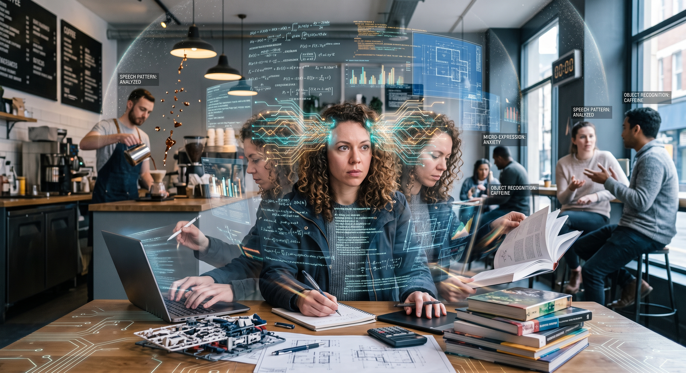
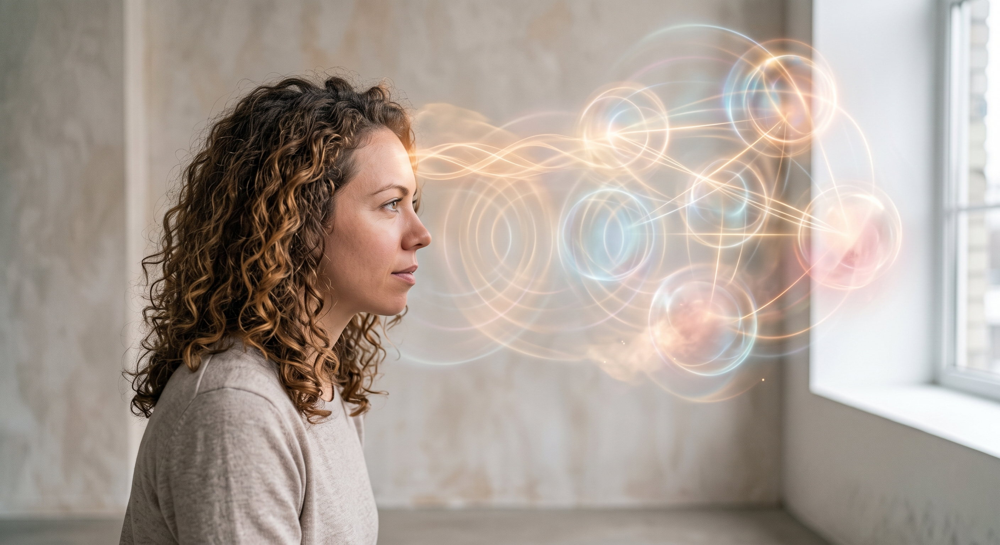

Día 6: Tus superpoderes ocultos
Llegamos al Día 6 y hoy la temática es: Tu superpoder oculto. O mejor dicho tus superpoderes, porque después de pensarlo me di cuenta de que tienes varios y era injusto elegir solo uno. Tienes un arsenal completo JAJAJ.
⏳ Alterar el espacio-tiempo:
El primero definitivamente es tu habilidad para alterar el tiempo. Tienes esa increíble capacidad de súper arreglarte, hacerte unos makeups impecables y pasarte toda la mañana enviando audios de que vas tardísimoooo y que estás con las justas. Pero luego, como por arte de magia, nunca llegas tarde al trabajo. Sigo sin entender cómo logras doblar el tiempo a tu favor, es pura brujería o un superpoder en toda regla.

📚 Súper velocidad mental:
El segundo es tu capacidad increíble para leer y devorarte los libros en un segundo. Y siento que gracias a eso mismo tienes una imaginación gigantesca. Puedes vivir mil vidas y mundos diferentes en una sola tarde de lectura, y esa forma en la que tu mente crea escenarios es fascinante.

🎁 Telepatía emocional:
Y el tercero es esa magia que usas para dar los mejores regalos. Tienes un don súper bonito para armar detalles perfectos porque siempre prestas atención a las cosas pequeñas de la gente que quieres. No es solo dar algo por dar, es que le pones tanta pasión y cabeza que siempre das exactamente en el clavo con lo que la otra persona necesita.

Si Marvel te estuviera buscando, ya serías parte de los Vengadores JAJA.
¡Nos vemos mañana para el día 7! 💜